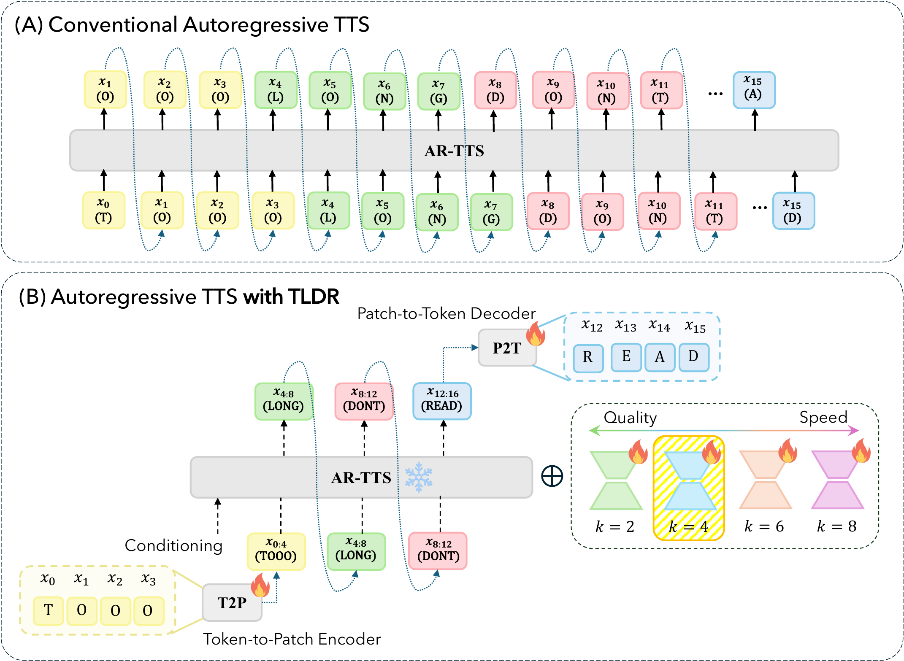

TLDR:
Temporal Downsampling and Reconstruction for Accelerating Pretrained Autoregressive Text-to-Speech Models
Anonymous Submission
Paper under double-blind review
Abstract. Codec-based autoregressive text-to-speech (AR-TTS) models achieve strong
synthesis performance through large-scale pretraining, but their token-level decoding
incurs substantial computation and KV-cache costs. Patch-based autoregressive modeling
shortens the decoding sequence by grouping consecutive speech tokens; however, existing
approaches are typically designed and trained specifically for patch-level generation and
use a fixed patch size, limiting both pretrained-model adaptation and deployment
flexibility. We introduce TemporaL Downsampling and
Reconstruction (TLDR), a post-training acceleration framework that adapts
pretrained AR-TTS models. TLDR combines a token-to-patch encoder with a patch-to-token
decoder, reducing the sequence processed by the global backbone. Furthermore, we introduce
a controllable variant with patch-size-specific LoRA adapters to control the decoding
granularity within a single checkpoint. Experiments on three pretrained AR-TTS models show
that, at k = 4, TLDR achieves 1.78×–2.49× inference
speedups while maintaining word error rate comparable to that of the corresponding
original models.
This page hosts audio samples only.
Overview

A conventional AR-TTS model emits one speech token per autoregressive step (A). TLDR inserts a token-to-patch encoder and a patch-to-token decoder around the frozen backbone (B), so the backbone runs once per patch of k tokens. The controllable variant keeps one adapter per patch size inside a single checkpoint, letting the decoding granularity — and with it the quality/speed operating point — be chosen at inference time.
English Samples (Seed-TTS test-en)
| Text | Prompt | Ground Truth | TLDR k = 2 | TLDR k = 4 | TLDR k = 6 | TLDR k = 8 |
|---|---|---|---|---|---|---|
| Lifeguards were standing on a tower, staring at the water. | ||||||
| It presents weapons, vehicles and uniforms, as well as abundant documentation history. | ||||||
| His designs often incorporate elements of body horror. | ||||||
| Selected forms are propagated by stem cuttings in Micronesia. | ||||||
| They defend themselves if they feel threatened, but otherwise tend to ignore humans. | ||||||
| The "smoking pipe" shape was designed to increase the quantity of available ink. | ||||||
| It's not war we should fear, but what the Germans do in peace. | ||||||
| Before the boy could reply, a butterfly appeared and fluttered between him and the old man. |
Seed-TTS test-en. One checkpoint; only the LoRA adapter selecting the patch size differs between the four TLDR columns. Sampling settings are identical.
Mandarin Samples (Seed-TTS test-zh)
| Text | Prompt | Ground Truth | CosyVoice 3 | CosyVoice 3 + LoRA | TLDR k = 2 | TLDR k = 4 | TLDR k = 6 | TLDR k = 8 |
|---|---|---|---|---|---|---|---|---|
| 再看看自己那座没盖完的高楼大瓦房，也早就不见了踪影。 | ||||||||
| 拿破仑远征俄国跟他的婚姻有一定的关系。 | ||||||||
| 此前奥巴马在此账号上发表过的所有推文，均被抹掉。 | ||||||||
| 他告诉我，台湾尚在生产番薯粉的粉厂，就他了解只剩两家。 | ||||||||
| 过敏性结膜炎，又痒又红的兔子眼病情分五类。 | ||||||||
| 这与中央一直强调的，盘活存量财政资金的意图，也是相一致的。 | ||||||||
| 目前吃货姐用的是韩国那款，超级补水的芦荟胶。 | ||||||||
| 我们将为全球市场的可持续发展贡献力量。 |
Seed-TTS test-zh. TLDR and the CosyVoice 3 + LoRA baseline were fine-tuned on AISHELL-3 from the same English-trained starting point, so the comparison separates patching from the additional training.
LibriSpeech-PC Samples
| Text | Prompt | Ground Truth | TLDR k = 2 | TLDR k = 4 | TLDR k = 6 | TLDR k = 8 |
|---|---|---|---|---|---|---|
| So I return rebuked to my content, And gain by ill thrice more than I have spent. | ||||||
| It sounded dull it sounded strange; and all the more so because of his main condition". "Which was-"? | ||||||
| I believe I have a little taste that way; those are all real, you know, those jewels. | ||||||
| The twin brother did something she didn't like, and she turned his picture to the wall. | ||||||
| This would be an easy way of doing it, but it would not be the best way, for the reason that it is too easy to call attention to itself. | ||||||
| Never did he object to buckling up his suitcase for any country whatever, China or the Congo, no matter how far off it was. |
LibriSpeech-PC test-clean cross-sentence subset. Longer utterances, prompted by a different sentence from the same speaker.
All audio on this page is synthesized speech, generated from public evaluation corpora for research purposes; prompt and reference recordings belong to their original speakers.